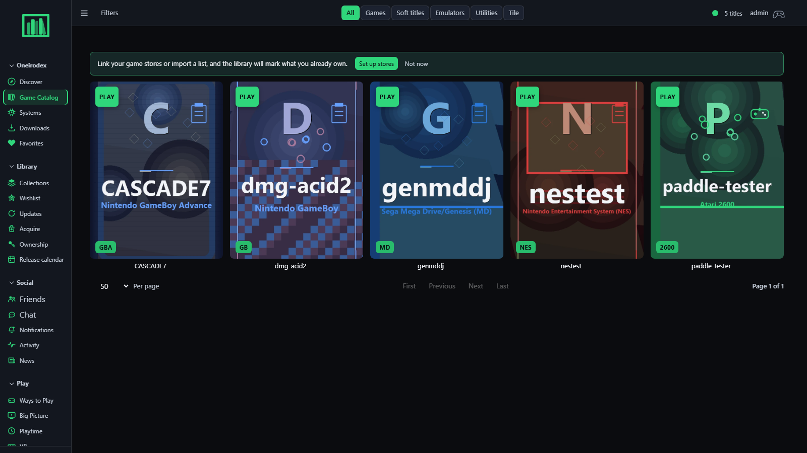

Showing Oneirodex before installation
A household considering a self-hosted game library has a practical question. What will the people using it actually see?

Chris’s contribution
In his public project note, Chris describes building the companion website. Its purpose is to make Oneirodex understandable before a visitor opens the application.
One design decision
The site pairs a gallery of real interface captures with short captioned walkthroughs. A still lets someone inspect the game grid or the library controls at their own pace. A walkthrough shows what happens after a selection. A catalog of videos would be heavier to load all at once, so the player streams individual clips on demand.
See the result
Open the gallery, inspect a library screen, then choose a walkthrough. The companion site README documents which screens and videos are used and how the player loads them.